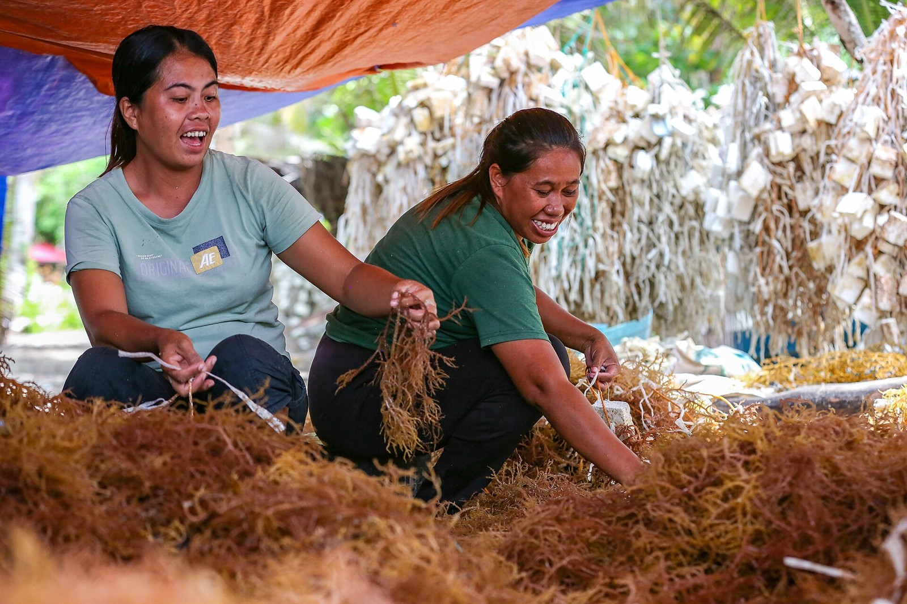

Welcome to Philippine Agriculture and Fisheries!


The Philippines is an agricultural and archipelagic country blessed with fertile lands, favorable climate conditions, abundant natural resources, and rich marine ecosystems. These natural advantages allow the country to produce a wide variety of agricultural and fishery products. Agriculture involves growing crops, fruits, and vegetables, as well as raising livestock, while fisheries focuses on catching and raising fish and other aquatic resources from rivers, lakes, and oceans. Some of the country's well-known products include rice, corn, coconut, bananas, mangoes, milkfish, tilapia, and tuna.
Agriculture and fisheries play an important role in the Philippines by providing food, creating employment opportunities, supporting local businesses, and contributing to the country's economy. However, these industries also face challenges such as climate change, natural disasters, rising production costs, and overfishing. Through proper resource management, modern technology, and sustainable farming and fishing practices, these sectors can continue to grow and support future generations. This website aims to provide information about Philippine agriculture and fisheries, showcase local products, and share the latest news and developments in these industries.
Importance of agriculture and fisheries to the country
Agriculture and fisheries play an important role in the Philippines by providing food, employment, and livelihood to millions of Filipinos. These industries supply essential products such as rice, vegetables, fruits, meat, and fish that meet the daily needs of the population. They also contribute to the country's economy by supporting farmers, fisherfolk, local businesses, and food industries through production, trade, and exports. Furthermore, agriculture and fisheries help maintain food security, support rural communities, and make use of the country's natural resources. By promoting sustainable farming and responsible fishing practices, the Philippines can protect these resources and ensure a continuous supply of food for future generations.